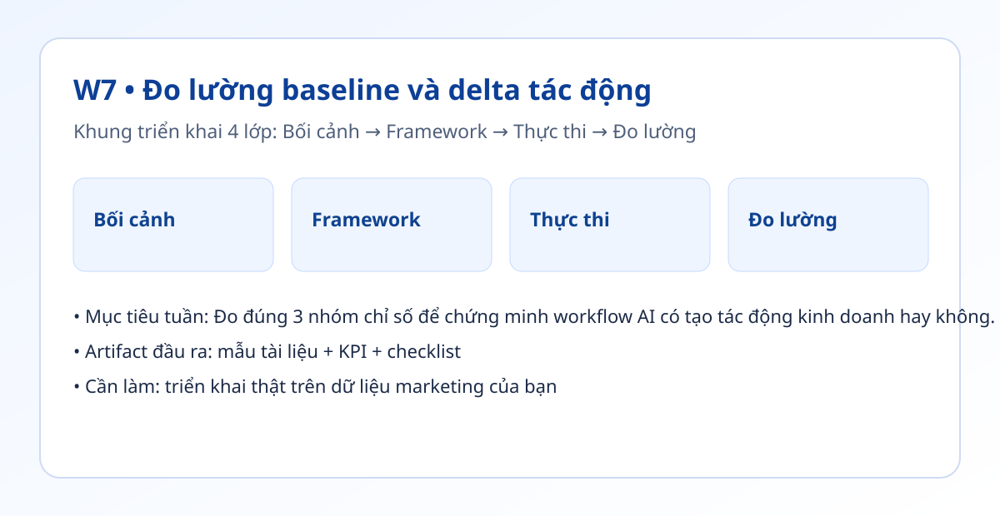

Hình trực quan mô-đun

Bối cảnh thực tế
- Nhiều đội triển khai AI nhưng không có mốc nền nên không chứng minh được giá trị thật.
- Đo quá nhiều KPI làm nhiễu, đo quá ít thì thiếu bằng chứng.
- Tuần này bạn xây bộ chỉ số tối giản nhưng có ý nghĩa quyết định.
Khung tư duy cốt lõi
- Bộ 3 chỉ số: Speed (tốc độ), Consistency (ổn định), Outcome (kết quả).
- Công thức chênh lệch: (Sau - Trước) / Trước.
- Thiết kế bảng điều khiển ưu tiên hành động, không chỉ để đẹp.
Quy trình triển khai chi tiết
- Bước 1: Chọn 3 KPI đại diện cho tốc độ, ổn định và kết quả.
- Bước 2: Ghi mốc nền tối thiểu 2 tuần trước khi thay đổi luồng.
- Bước 3: Áp dụng luồng AI trong 2 tuần tiếp theo.
- Bước 4: Tính chênh lệch cho từng KPI và gắn ý nghĩa kinh doanh.
- Bước 5: Tạo bảng điều khiển 1 trang cho đội theo dõi hằng tuần.
- Bước 6: Dựa trên dữ liệu, quyết định giữ, cải tiến hoặc dừng quy trình.
Tình huống nhỏ với số liệu
| KPI | Mốc nền | Sau cải tiến |
|---|---|---|
| Thời gian bản nháp | 35 phút | 18 phút (-48%) |
| Xuất bản đúng lịch | 60% | 85% (+25pt) |
| Tỷ lệ qua QA vòng 1 | 52% | 79% (+27pt) |
Kết luận: Bộ chỉ số 3 lớp cho thấy luồng mới không chỉ nhanh hơn mà còn ổn định hơn ở chất lượng.
Sản phẩm bàn giao tuần này
- Dashboard KPI 1 trang (Google Sheets hoặc Looker Studio).
- File mốc nền 2 tuần.
- Báo cáo chênh lệch kèm kết luận hành động.
Bài tập thực hành (45-60 phút)
- Lấy 3 KPI của bạn và tạo bảng điều khiển tối thiểu.
- Điền dữ liệu 2 tuần mốc nền + 1 tuần thử nghiệm.
- Viết 1 đoạn kết luận 5 dòng dựa trên số liệu.
Thang đo hoàn thành
| Mức | Mô tả |
|---|---|
| Mức 0 | Không có mốc nền |
| Mức 1 | Có KPI nhưng thiếu chênh lệch |
| Mức 2 | Có mốc nền, chênh lệch, bảng điều khiển |
| Mức 3 | Có kết luận hành động rõ ràng |
Lỗi thường gặp
- Đo KPI vanity không liên quan mục tiêu.
- Không khóa định nghĩa KPI dẫn đến số liệu lệch.
- Không cập nhật dữ liệu đều đặn mỗi tuần.
Video thực hành (tùy chọn)
Phần học chính đã đầy đủ bằng văn bản và ví dụ. Nếu bạn muốn xem thao tác thực tế, dùng các video gợi ý sau:
Đánh dấu tiến độ
Tuần này chưa hoàn thành
Đã hoàn thành tuần 7